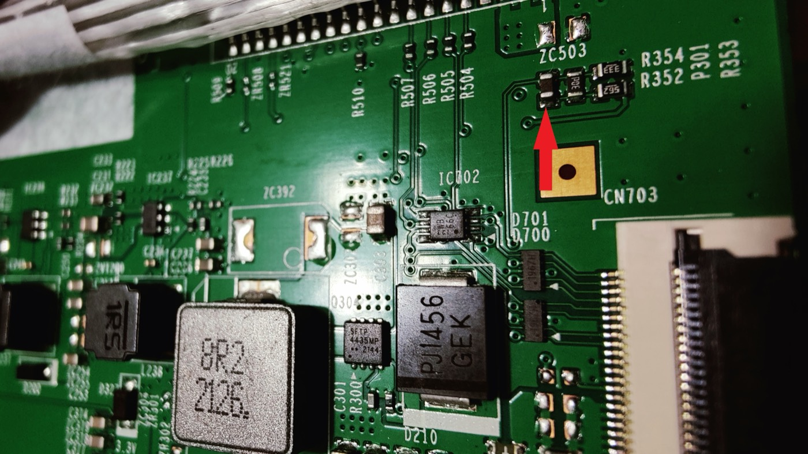

No THA1 on your board? The thermistor is P301.
The repair videos show the older G9 T-con, with THA1 on a slotted tab in the upper-left corner, above RA13 and RA14. Your board does not match. On the newer board the part to remove is P301, in the top-right corner.
Check you have the newer board
| Newer board | In the videos | |
|---|---|---|
| Printed on board | OSCAR_T_TCON_MNT, BN41-02934A, upper-left | 49DQ_JU11B4H26B_V03_HF |
| Sticker | BN95-08081A, BN95-08081B, BN95-07897A, or BN95-07925A | BN96-51198A |
| Thermistor | P301, top-right, at the edge of the tape strip | THA1, top-left tab, above RA13 and RA14 |
| Reads once removed | about 28 to 33 kΩ (Samsung part 1404-001731, 33 kΩ NTC) | about 10 to 12 kΩ |
| Version code (S49AG95 models) | CB02 to CF08 | CA01 |
The version code is on the label on the back of the monitor, as Version No: CC03 for example.
Where P301 is

Finding it on your board
- Get to the T-con as in the videos. On some units it sits under a metal bracket in the middle. Leave the ribbon cables plugged in.
- Look at the top-right corner of the board, not the top-left. A strip of tape runs along that edge. Lift it if it covers the corner.
- Just below the tape, above the tall ribbon connector on the right edge, find the gold square pad labeled
CN703. - Directly above CN703 is a group of four tiny parts. The leftmost one stands upright, has a dark body, and has no printed code. That part is P301. The other three have printed codes.
- Remove it the way the videos remove THA1.
- Measure the removed part. It should read about 28 to 33 kΩ at room temperature. THA1 in the videos reads about 10 kΩ, so a higher number here is correct.
To double-check the spot, look for these labels. ZC503 is just above the group. R354, R352, P301, and R353 are printed to its right. R507, R505, R504, and R510 are to its left, and the 8-pin chip IC702 is below and to the left.
New to this repair? Start here
These get you from a closed monitor to the T-con, in order.
- Read Samsung's official repair guide for this model. It covers disassembly down to the main board and power supply, but not the T-con.
- Remove the stand. Watch "How To REMOVE STAND on Samsung G9 Monitor" by No Waffling.
- Remove the back cover. Watch "How to take off the back cover of Samsung Odyssey G9 monitor (LS49AG952NNXZA, most LC49G9 models)" by Coppell TV Repair. It shows this exact model.
For background on the fault and the fix, see these.
- My Mate VINCE's repair video diagnoses a G9 with the older board and removes THA1.
- The r/AskElectronics thread is where the thermistor fix started.
- danieljbk's report covers causes, outcomes, and part numbers.
The power board carries mains voltage, so unplug the monitor and wait several minutes before touching anything. The ribbon cables and the curved panel are fragile. Opening the monitor ends any warranty claim.
If removing P301 did not fix it
Among owners who named this board, removing P301 fixed 6 monitors and did not fix 8. Removal also permanently disables the T-con's overheat cutoff.
- Test the monitor before you put the back cover on. Connect only the power cable. A "No signal" message means the panel is running. A black screen means another fault.
- If you have a multimeter, check for a shorted capacitor. Lift the white strip along the bottom edge of the panel and test the capacitors on the small boards there for a short to ground. Eight owners found a shorted capacitor there, and four of them had already removed the thermistor. Removing the shorted capacitor fixed it. "REPAIR FOR SAMSUNG ODYSSEY G9 49 Inch" by Console Hub is one example.
- Don't buy a replacement T-con first. Nine owners of 49-inch models report a new T-con changed nothing, and three of them also replaced the main board and power supply with no change.
- If none of that helps, the panel itself may have failed. Three owners had their monitor fixed with a new panel. Owners report quotes of about €800 to €1,000 for the panel. If the monitor is still under warranty, that is the time to use it.
Other causes are in the danieljbk report.
Credits
- u/OccasionalBrat posted the P301 photo and pointed out that it is under tape.
- u/Sblombliz photographed the BN95-08081A sticker that tied this board to the S49AG95 models.
- u/alphanimal published the original THA1 removal, and u/East_Development_126 first traced the fault to the thermistor.
- danieljbk collected all of it in one report. Initial version, 6 October 2026.